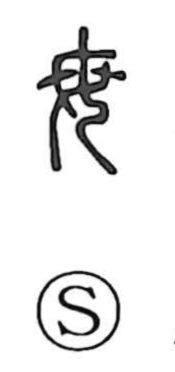

母

Uncategorized
Kun: haha | On: bo
mother ・ grandmother ・ wet nurse ・ origin ・ source
Explanation
This character is a pictograph of a woman’s torso with prominent breasts, and so first named the mother. From that core image it naturally came to denote a grandmother or a wet nurse, and by extension anything that serves as a root or source, like a mother who brings forth a child. In related graphs, 每 (later written 毎) shows a woman with her hair tied and set with a fixed ornament; 敏 adds the hand element 又 to that hairpiece, depicting the act of attentively arranging it—hence the sense of earnest, ritual effort.